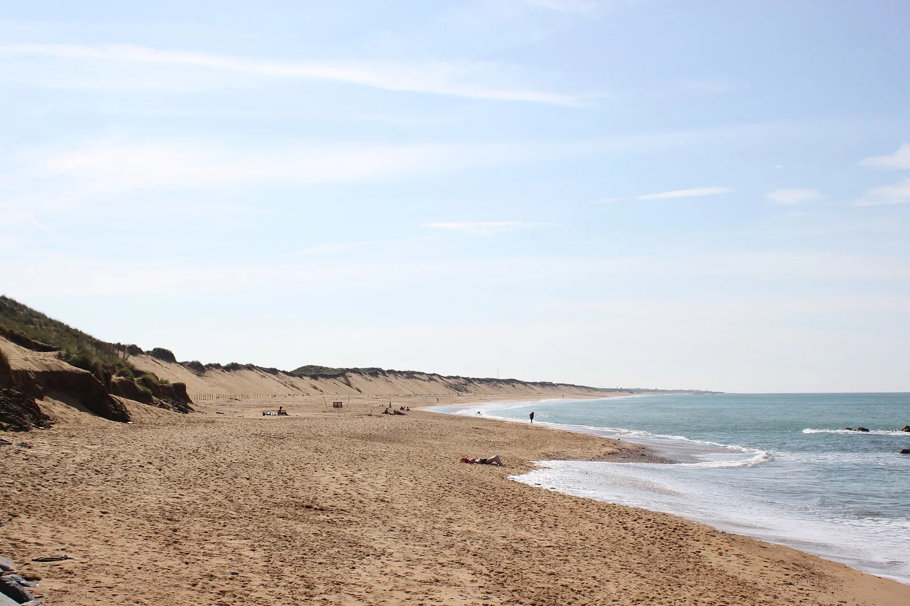

Sauveterre — Olonne
Vendée, France · surf

Long beach break sauvage bordé de dunes et de forêt. Plusieurs pics, bonne consistance et ambiance nature en Vendée.
- Lieu
- Vendée, France
- Niveau
- Intermédiaire
- Activités
- surf
- Type d'eau
- Mer / océan
- Coordonnées
- 46.53, -1.80 (position approximative du secteur)
Dangers à connaître
- Baïnes et courants.
- Plage sauvage, peu surveillée.
Le conseil d'Ocean Buddy
Spot nature superbe. Comme c'est peu surveillé, surfe accompagné.
Ouvrir dans Ocean Buddy Télécharger sur l'App Store
Source : Description historique Ocean Buddy · vérification externe en attente.